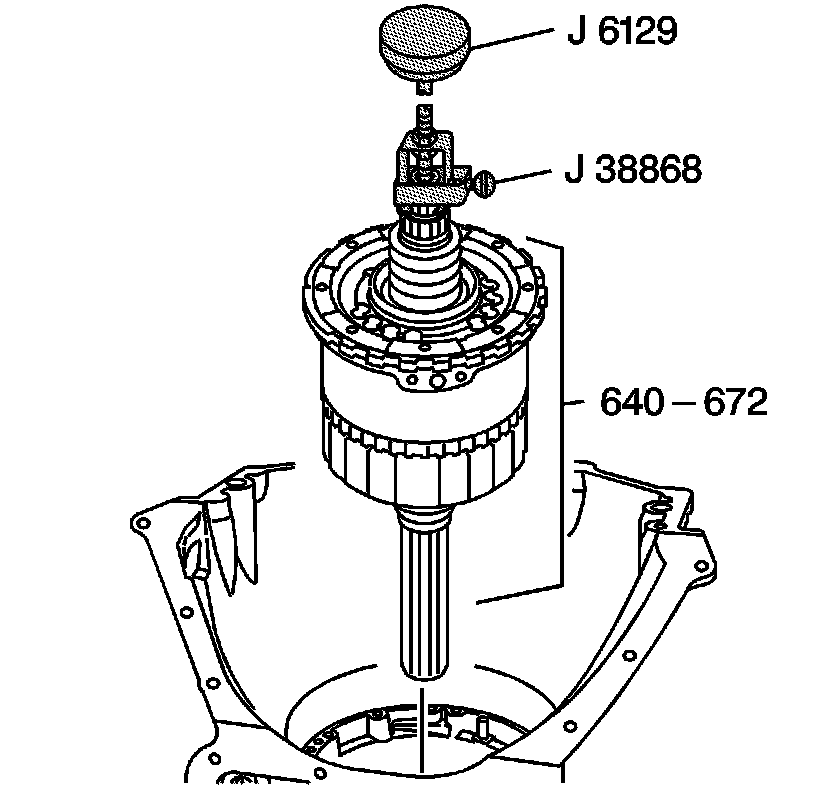
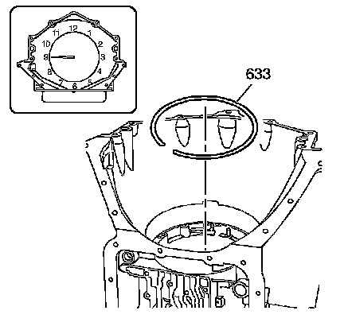

Center Support and Gear Unit Assembly Installation
Center Support and Gear Unit Assembly Installation
Tools Required
^ J 6129 Handle
^ J 28585 Snap Ring Remover
^ J 38868 Output Shaft Assembly Remover and Installer

1. Attach the J 38868 and the J 6129 onto the main shaft.
2. Align the bolt hole in the center support with the bolt hole in the case and carefully lower the center support and gear unit assembly (640-672) into the case.
3. Remove the tools.

4. Using the J 28585, install the center support retaining ring (633). The end gap of the center support retaining ring (633) should be located at the 9 o'clock position with the beveled edge of the retaining ring facing up.